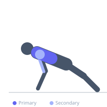
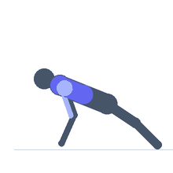

Exercise guide / Wall Decline Push-Up
Wall Decline Push-Up
A bodyweight push-up variation where the feet are braced against a wall at elevation, creating a decline angle. Unlike using a bench, the wall allows for a steeper decline while requiring the feet to actively press into the wall for stability. This targets the lower pectoralis major fibers while also loading the core and shoulder stabilizers differently than a bench-based decline.
Primary muscles
pectoralis major sternal
Secondary muscles
deltoid anterior
triceps lateral head
Stabilizers
transverse abdominis
pectoralis minor
Equipment


Starting position
- Begin in a plank position facing away from a wall. Walk the feet up the wall to a comfortable decline angle (30–60 degrees). Hands on the floor, arms extended.
Setup
- Use a solid wall with a non-slip floor. Wear shoes for better traction against the wall. Start at a lower decline and progress steeper as strength improves.
Steps
- Step 1: Position feet on the wall at a comfortable height. Establish a rigid plank position with arms extended.
- Step 2: Bend elbows and lower the chest toward the floor in a controlled descent.
- Step 3: Descend until chest is 2–3 cm from the floor or as far as shoulder health allows.
- Step 4: Press powerfully back to the starting position, maintaining the plank through the entire set.
Coaching cues
- Press your feet into the wall — this keeps you stable and activates the lower body
- Squeeze the glutes to keep the plank rigid
Breathing
- Inhale on descent, exhale on the press.
Range of motion
- Full push-up range, chest to near-floor at the bottom, full arm extension at the top.
Tempo
- 3-1-2-0
Common mistakes
- Feet slipping down the wall mid-set — push actively into the wall with the feet
- Hips sagging or piking — maintain a strict plank
- Hands placed too wide, stressing the shoulders
Safety
- Wear grippy shoes to prevent foot slippage
- Start at a low angle and only increase the wall height when comfortable
- Have clear floor space below in case of foot slip
Training
- hypertrophy: 8–15 reps
- endurance: 15–25 reps
- hypertrophy: 3–4 sets
- Rest: {'hypertrophy': 75}